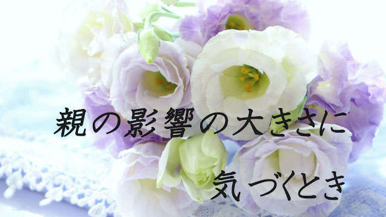

今回は予定を変更して親の影響力と親子の葛藤について話したいと思います。
私事ですが、つい最近母を喪くし葬儀その他でバタバタしブログもすっかり更新できない状態でした。
母は92で老衰ということで覚悟はしていたつもりですが、やはり失ってみると様々な思いが巡ります。
特に幼いころ母に言われたこと、叱られた思い出、それから私が成人してからの関係や老いてきてからのエピソードなど、取りとめもなく次々と場面（シーン）が心の映像として浮かび上がります。
楽しい思い出や懐かしい場面もありながら辛い記憶や葛藤もあります。
誰でも親との間には良い思い出ばかりではなく、衝突や葛藤、割り切れない感情などを抱えているものだと思います。
そして親に死なれてみて初めて気づく、親の影響の大きさというものもあると感じます。何というか、自分と親との関係性の全貌みたいな、ああそういうことだったのかという理解。
私の場合は、母は母親というより「父親」だったのだという理解です。母は私にとって父親の役割を果たしていたのだ。そう考えれば色々なことがつじつまが合うのです。
それは早くに父を失くしたからというだけではない、私の気質と母の気質との違いやそこから生ずる誤解や葛藤にそもそもの原因があったのだと思います。
母から見れば私には看過できない欠点があったのでしょう。
私は幼いころから短気でカンシャク持ちであり、そのくせ我が強く口ばかり達者で実行力も忍耐力もない。スポーツも不得意で勉強もやらず部屋で絵（主にマンガ）ばかり描いている、まことに男らしくない奴というわけです。
さらには朝は起きられずいつまでもグズグズ布団にこもり、しょっちゅう熱を出したり転んでケガをしたりと学校も休みがちで身体的に貧弱でした。
「もっと男らしくしなさい」が母の常套句でしたね。
こう書くと「そんなダメ少年だったら親が心配するのは当然じゃないか」と思うかも知れません。
それはそうだけど、私からすればそれらは生まれつきの気質（体質）に由来するものも多々あり、母の「男の子はこうあるべき」という彼女自身の理想像に私の「実像」が合わなかっただけという気がします。(当時私は朝早く起きると吐き気、めまい、頭痛に襲われ午前中はボーっとしていて、夜になると元気が出るという困った体質。それは今も変わらない)
つまり母には母の「息子にこうあって欲しい」という理想があり、それに加えて私の「屁理屈ばかり言う」尊大さを矯正しようという親としての責任感もあったのでしょう。
お互い我が強いだけに互いの気質の違いを欠点としかとらえず、バトルは激しさを増したわけです。
父の死後は私も思春期だったので、反抗の矛先は母ひとりに向かい、母も負けじと応戦したので私たち母子の関係は険悪になりがちでした。
私からすれば欠点ばかり指摘し、良い所を評価しようとしない母に大いに不満（甘え？）があったわけで「私は受け入れてもらえないのだ」という怒りというか焦燥感を抱え続けていたのです。
子どもにとって「ありのままの自分」を認めて受け入れてもらえないことは、なかなか辛いものがあります。
一方親からすれば子どもの欠点を矯正し、社会のルールを教え将来困らないようにしつけなければと思うのも当然です。
特に私のような我の強い子どもに対しては。
今にして思えば母の気持ちも分かります。
母も必死だったのでしょう。「父親のいない家庭だから」という世間の冷たい目と闘うために、自ら会社を興して懸命に働き女手ひとつで3人の息子を育て上げた。
彼女は自ら「強い父親」を演じ続けたのです。
そんな母に反発することで私も鍛えられたのだといまは思えます。
人生には様々な困難があります。絶望的な状況に陥ったり道に迷ったり、光を求めて暗闇をさ迷うときもあります。
そんなとき私は「男らしく堂々と歩め」「学ぶことが大切」という母の言葉をなぜか思い出すのです。
人を頼らず自力で前へ進む自立心。教育を通じて成長することの大切さ。自分の能力を少しでも他者や社会に役立てようとする貢献欲。
これらは知らずしらず私が反抗しながらも母から学び取ったあり方そのものといえます。
多くの確執と葛藤。しかしそれらの一つひとつが今の私を創り上げている。
当初はネガティブと見えていた母と私の関係ですが、より大きな視点からとらえると決して不幸なものではなかった。そう思います。
母は立派に父親の役割を果たしてくれた。
いま素直に感謝したい。母を喪くしてそんな気持ちが沸き起こります。